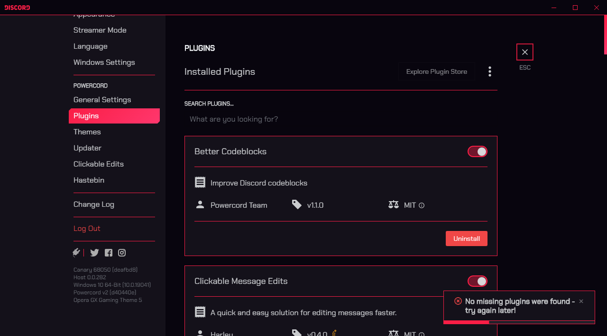

Build Numbers
Build numbers moved to the bottom.
Changelogs
Initials are used. For example ADT means AmoledDarkTheme. See the list of initials at the bottom. Another example, ADT:123 means AmoledDarkTheme build 123. Note that the theme version is not the same as the imported build version.
2020-10-11
- CFFB:40 - Further forces font replacing on elements using the famous
!important by using copy/paste for each selector.
2020-10-10
- OGGT:19 - Fix some borders and animations, and improvements.
2020-10-07
- OGGT:16 - Tags are working again + some fixes.
- ADT:288 - Tags are working again.
- ADTO:189 - Tags are working again.
2020-10-06
- OGGT:14 - Performance is saved when the app is inactive by disabling all the animations. Your processors and games will thank me later.
2020-10-05
- OGGT:13 - Some fixes and improvements.
2020-10-04
- CFFB:39 - Fixed
pre, it used the wrong font in some elements.
- OGGT:12 - PermissionsViewer style fix.
- ADT:287 - Some fixes and improvements.
- ADTO:188 - Some fixes and improvements.
2020-10-03
- CFFD:7 - Codeblock fix on Powercord.
- OGGT:10 - Codeblock fix on Powercord. Removed duplicate HLJS names.
2020-09-30
- ADT:284 - Theme rewritten and removed all useless code. I hope that this update won't have appearance changes (except some fixes) nor negative effects. Normally, no.
- ADTO:185 - Theme rewritten and removed all useless code. I hope that this update won't have appearance changes (except some fixes) nor negative effects. Normally, no.
- TATOCB:7 - Fix CharCounter position.
2020-09-29
- OGGT:9 - Fix: HLJS Names, AutoComplete, Tags and more.
2020-09-28
- OGGT:8 - This update adds compatibility and support, and fixes some issues.
2020-09-27
- OGGT:7 - Compatibility update, and added more Opera GX backgrounds.
- ADT:283 - Fix ChannelTabs FavContainer background color.
- ADTO:184 - Fix ChannelTabs FavContainer background color.
- OGGT:6 - Fix ChannelTabs style.
2020-09-26
- OGGT:5 - Future optimization with Powercord.

- OGGT:4 - Fix font not working if Chakra Petch is not installed.
2020-09-19
- OGGT:3 - Add Widgets support.
2020-09-17
- OGGT:2 - Modified keybinds and Keyboard Combos support.
2020-09-15
- Website - Big changes in the website like you can see, and added the other page for stuff not related with Discord. Oh, and it no longer uses CPU/GPU in background! (I disabled infinite animations)
2020-09-14
- ADTO:182 - Changed GreyAccentColor (color is a little darker).
- CFFB:38 - Added and removed some selectors for monospace font.
- OGGT:1 - Opera GX Gaming Theme is fully released! See themes page, it's the first theme from the top.

2020-09-12
- ADT:281 - Fixed emoji picker and removed some disabled code for light theme.
- ADTO:181 - Fixed emoji picker and removed some disabled code for light theme.
2020-09-11
- ADT:280 - Changed background color for NowPlayingColumn.
- ADTO:180 - Changed background color for NowPlayingColumn.
2020-08-30
- Website - Created a custom 404 page. Try it.
2020-08-29
2020-08-28
2020-08-27
- ADT:279 - Activity card improvement.
- ADTO:179 - Activity card improvement.
- TATOCB:6 - Interacts with all bars (jump to present, messages failed to load, …)
2020-08-26
- ADCB:6 - Compatibility with PinDMs.
2020-08-25
- ADT:278 - Stopped kidding, seriously…
- ADTO:178 - Stopped kidding, seriously…
2020-08-20
- GSC:6 - Another compatibility update.
- CFFB:36 - This file was edited, but changelog is not provided.
2020-08-19
- ADT:277 - Improved DevTags, now it's like BotTags in case you are using EditUsers.
- ADTO:177 - Improved DevTags, now it's like BotTags in case you are using EditUsers.
2020-08-18
- CFFB:35 - Add 2 new selectors.
- Website - Added OGGT from the themes page. Updated images.
2020-08-17
- BBE:9 - This theme is now dead and replaced by OperaGxGamingTheme.
- GSC:5 - Now it also supports the mode without the time bar!
- ADT:276 - Fixed compact memberlist and added the
--background-secondary-alt var.
- ADTO:176 - Fixed compact memberlist and added the
--background-secondary-alt var.
2020-08-15
- CC:9 - Memberlist is ready! Also improved transitions:
width only.
2020-08-13
- TATOCB:5 - Fix Jump To Present bar clicking issue.
2020-08-11
- TATOCB:4 - Now supports the Jump To Present bar.
2020-08-10
- CMOS:5 - Compatibility update: Removed shit normalized classes in all selectors.
- CC:8 - Compatibility update: Removed shit normalized classes in all selectors.
- GSC:4 - Compatibility update: Removed shit normalized classes in all selectors.
2020-08-09
- CFFD:6 - Compatibility update.
2020-08-08
- All Themes - Add Website link (redownloading is not required).
- GSC:3 - Compatibility update.
- SAB:7 - No longer interacts with memberlist (by changing a bad selector).
- TATOCB:3 - Removed shit transparent background for BetterFormattingRedux.
2020-08-04
- ADT:275 - Hover on someone in the chat who haves a tag for more info.
- ADTO:175 - Hover on someone in the chat who haves a tag for more info.
- BBE:8 - Hover on someone in the chat who haves a tag for more info.
2020-08-01
2020-07-30
- Website - Fixed download button for AmoledDarkThemeOptimized.
- ADT:274 - Fixed server folders (light theme), and supports the new BetterDiscord v1.0.0.
- ADTO:174 - Fixed server folders (light theme), and supports the new BetterDiscord v1.0.0.
- BDLTF:4 - Supports BetterDiscord v1.0.0, public servers and Custom CSS (you must install the new BDLTF and delete the old file).
2020-07-29
2020-07-27
- RNT:2 - Not an update, but I verified it and good news, it works.
- Modernizer:22 - Killed Modernizer, now this theme is dead.
- BBE:7 - Added all Modernizer code in BBE.
2020-07-26
- Website - Added shadows and the changelogs button in themes page. Images and somme buttons was modified.
2020-07-25
- Website - Added the themes page. Tried to fix sizes but it partially worked.
2020-07-23
- ADT:273 - Store download page now modified by the theme.
Improved the system for build numbers for ADT and ADTO, so I'll a bit faster for future updates.
- ADTO:173 - Store download page now modified by the theme.
Improved the system for build numbers for ADT and ADTO, so I'll a bit faster for future updates.

2020-07-22
- Repository - Edited some MD files.
- Website - Non-generated website released!
- ADT:272 - Fix light theme DMs
- ADTO:172 - Fix light theme DMs
2020-07-21
2020-07-18
- CFFB:33 - Add
.highlight pre
- ADT:269 - Selected private channel background uses accentcolor
- ADTO:170 - Selected private channel background uses accentcolor
- M:21 - Disabled some code (border for mentions, padding for messages)
2020-07-17
- CFFB:31 - Fix link not working
- CFFB:32 - Trying to fix codezones on GitHub
2020-07-16
- M:20 - Add radius for "channel private search"
- SAB:6 - Supports private channels
2020-07-15
- Repository - Created this repository and updating it to get ready
- ADT:268 - Edited DevTags and added HelperTag
- ADTO:169 - Edited DevTags and added HelperTag
Build Numbers, Initials and Status for each File
+--------------------------------------------------------------------------------------------------+
| TYPE | NAME | INIT. | B.NUMBER | UP-DATE | STATUS |
+---------+-----------------------------------+--------+----------+------------+-------------------+
| 1MSTYLE | CustomFontForBrowser | CFFB | 40 | 2020-10-11 | UPDATED |
| 1MSTYLE | ReversoContextShowBlurredExamples | RCSBE | 1 | 2020-09-06 | UPDATED |
| 1MSTYLE | YouTubeBlurEmails | YTBE | 3 | 2020-07-15 | UPDATED |
| 2MTHEME | AlwaysDisplayChannelButtons | ADCB | 6 | 2020-08-26 | UPDATED |
| 2MTHEME | BetterDiscordLightThemeFixer | BDLTF | 4 | 2020-07-30 | UPDATED |
| 2MTHEME | BlurEmail | BE | 3 | 2020-08-17 | UPDATED |
| 2MTHEME | CompactChannels | CC | 9 | 2020-08-15 | UPDATED |
| 2MTHEME | ContextMenusOldStyle | CMOS | 5 | 2020-08-10 | UPDATED |
| 2MTHEME | CustomFontForDiscord | CFFD | 7 | 2020-10-03 | UPDATED |
| 2MTHEME | GreenSpotifyControls | GSC | 6 | 2020-08-20 | UPDATED |
| 2MTHEME | RemoveNitroTab | RNT | 2 | 2020-07-29 | UPDATED |
| 2MTHEME | ServerlistAtBottom | SAB | 9 | 2020-08-26 | NEEDS UPDATE |
| 2MTHEME | TextAreaMaxHeightModifier | TAMHM | 2 | 2020-08-29 | UPDATED |
| 2MTHEME | TypingAtTopOfChatBox | TATOCB | 7 | 2020-09-30 | UPDATED |
| 2MTHEME | UT00_AllUTilities | UT00AU | 5 | 2020-07-15 | NEEDS UPDATE |
| 3SCRIPT | DiepIoDarkNeonTheme | DIDNT | 1 | 2020-07-15 | UPDATED |
| 5THEME | AmoledDarkTheme | ADT | 288 | 2020-10-07 | UPDATED |
| 5THEME | AmoledDarkThemeOptimized | ADTO | 189 | 2020-10-07 | UPDATED |
| 5THEME | OperaGxGamingTheme | OGGT | 19 | 2020-10-10 | UPDATED |
| 6WEB | Discord Addons Website | DA | 35 | 2020-09-15 | UPDATED |
+--------------------------------------------------------------------------------------------------+
TYPE meaning
1MSTYLE - Mini Style for Browser2MTHEME - Mini Theme for Discord App and Browser3SCRIPT - JavaScript4STYLE - Style for Browser5THEME - Theme for Discord App and Browser6WEB - Website
Join Discord